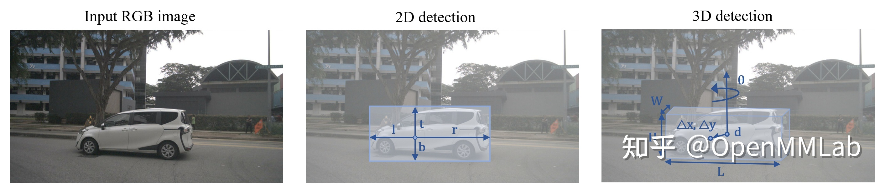
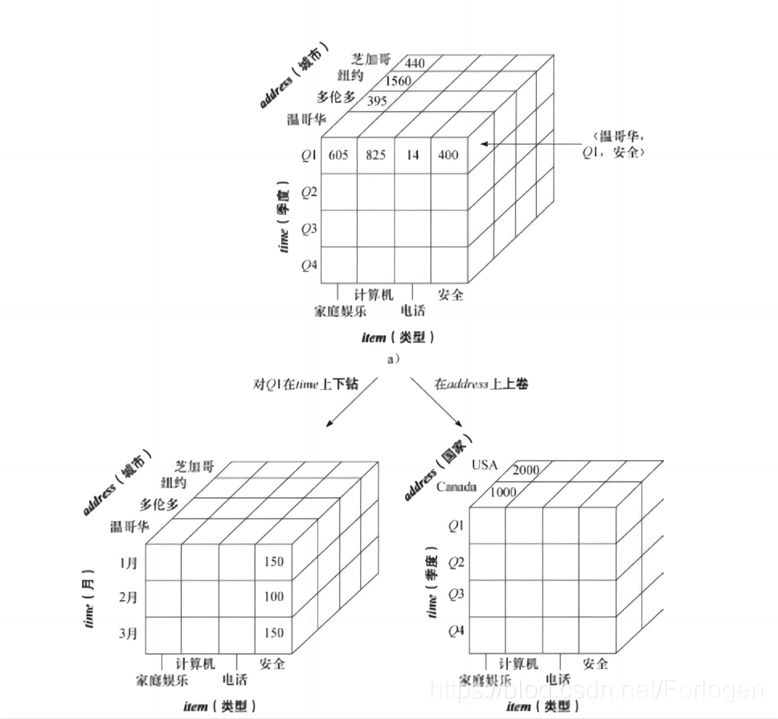
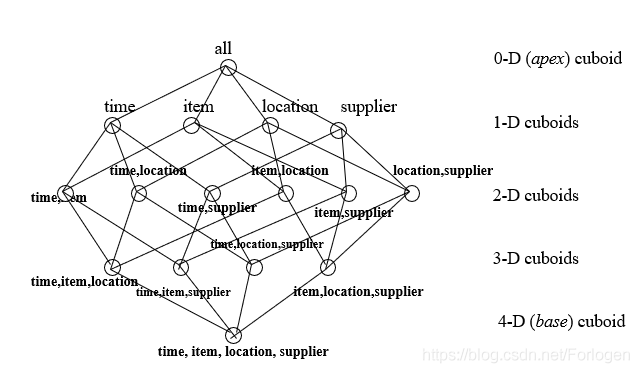
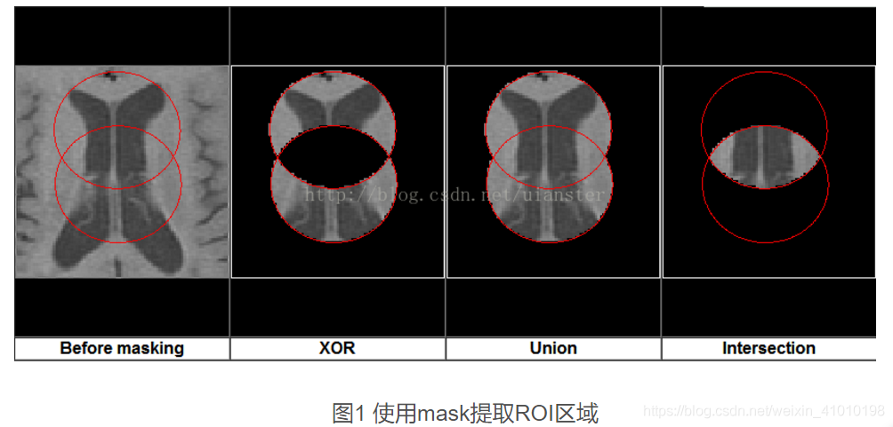

快照压缩成像：原理、实现、理论、算法和应用
使用二维传感器捕获快照测量中的高维数据
什么是 Snapshot Compressive Imaging (快照压缩成像)？
二维检测和高维(以3D为例)检测是什么？

单目 3D 检测和 2D 检测具有相同的输入数据模态和不同的预测目标。2D 检测任务一般要求在给定一张输入图像后，检测出物体的类别和 2D 框；单目 3D 检测则设定在给定同样的一张二维图像下，检测出物体的类别和 3D 框，其中 3D 框通常拥有至少 7 个自由度：三维位置，三维框大小以及转向角
驱动任务
Snapshot compressive imaging (SCI) uses a two-dimensional (2D) detector to capture HD (≥ 3D) data in a snapshot measurement.
Via novel optical designs, the 2D detector samples the HD data in
a compressive manner; following this, algorithms are employed to reconstruct the desired HD data-cube
快照压缩成像（SCI）使用二维（2D）探测器在快照测量中捕获高维（≥3D）数据。通过新颖的光学设计，2D探测器以压缩方式采样高维数据；随后，使用算法重建所需的高维数据立方体
什么是 Data-Cube (数据立方体)？
数据立方体是一种多维数据模型, 并且只有三维。

什么是多维数据模型？
多维模型的相关概念：
- 多维数据模型：为了满足用户从多角度多层次进行数据查询和分析的需要而建立起来的基于事实和维的数据库模型，其基本的应用是为了实现OLAP（Online Analytical Processing）
- 立方体：它是由维度构建出来的多维空间，包含了所要分析的基础数据，所有的聚合数据操作都在它上面进行
- 维度：观察数据的一种角度，比如在上图中address、item、time都可以被看作一个维度，直观上来看维度是一个立方体的轴，比如三个维度可以构成一个立方体的空间
- 维度成员：构成维度的基本单位，比如对于time维，包含Q1、Q2、Q3、Q4四个维度成员
- 层次：维度的层次结构，它存在两种：自然层次和用户自定义层次。比如对于时间维，可以分为年、月、日三个层次，也可以分为年、季度、月三个层次。一个维可以有多个层次，它是单位数据聚集的一种路径
- 级别：级别组成层次，比如年、月、日分别是时间维的三个级别
- 度量：一个数值函数，可以对数据立方体空间中的每个点求值；度量值自然就是度量的结果
- 事实表：存放度量值得表，同时存放了维表得外键，所有分析所用得数据最终都来自事实表
- 维表：对于维度的描述，每个维度对应一个或多个维表，一个维度对应一个表的是星型模式，对应多个表的是雪花模式
- OLAP：Online Analytical Processing，联机分析处理，是一种多维、分析式的查询处理技术，它是一种基于维度的数据分析方法，它的基本特征是：面向主题、集成性、时序性、非易失性、动态性、客户/服务器结构、开放式的数据库连接、多维数据分析、灵活的报表生成、图形化的用户界面

什么是 CS (Compressive Sensing) 『压缩感知』?
压缩感知本质上一个线性逆问题 (linear inverse problem)，目的是从少量的线性测量 (linear measurements) 中还原高维的信号。
什么是线性反问题 (linear inverse problem)？
在数学上,一对问题称为是互逆的，如果一个问题的表述或处理需要另一个问题解的信息；若把其中的一个问题称为正问题，另一个就称为反问题。
在物理问题上,反问题是指从一些带噪声的观测中试图还原出真实信息的行为,很好理解,这和上面的一点其实是一样的.
而对反问题而言,Well-posed和ill-posed的情况都是存在的,(Man unterscheidet gut gestellte und schlecht gestellte inverse Probleme. )
故而,想要理解求解 inverse problem 之难, 我们最好对适定问题（Well-posed problem）有一定的了解.
什么是适定问题（Well-posed problem）呢?
满足解存在、唯一且连续依赖于定解条件三个条件的问题,我们称之为 Well-posed problem ,反之,只要有一个条件不满足,则称之为不适定问题（ill-posed problems）
在图像识别领域且不仅在此领域,inverse problem 通常是 ill-posed problem.
到这里,什么是线性反问题 (linear inverse problem) 就很好理解了,就是从一些带噪声的观测中试图还原出真实信息的行为,且这个问题是一个线性问题.
什么是 sparse MRI (稀疏磁共振成像)？
MRI (Magnetic Resonance Imaging) 磁共振成像是一种医学成像技术，它利用磁共振现象对人体进行成像，是一种无创的检查方法。MRI 通过对人体进行扫描，利用计算机对扫描结果进行处理，得到人体的图像。MRI 检查不仅可以对人体进行断层成像，还可以对人体进行三维成像，从而可以对人体进行全方位的观察。
2.5D
2.5D 通常指的是 2.5 维，即 2D + 1D，比如 2D 图像 + 1D 深度图
第六页写道 “Note that (x, y, z) denotes 3D tomography and we use (x, y)+z
to represent a 2D image plus a depth map, which is also called 2.5D in certain articles in the literature.”
(x,y)+z 当然是 2.5D
SCI 的数学模型
前文中, 作者举了 video SCI & spectral SCI 两个例子来介绍 SCI 的设计. 而在本节中, 作者为他们构建了一个统一的数学模型, 这个模型也方便嵌套在别的 3D SCI 中.
在模型中, 作者使用了 mask matrix, 我们需要再复习一下 mask 的概念.
什么是 mask (掩膜)?
mask（掩码、掩膜）是深度学习中的常见操作。简单而言，其相当于在原始张量上盖上一层掩膜，从而屏蔽或选择一些特定元素, 其中掩膜的元素值为 0 或 1，0 表示屏蔽，1 表示选择。
按照上述定义，非线性激活函数Relu（根据输出的正负区间进行简单粗暴的二分）、dropout机制（根据概率进行二分）都可以理解为泛化的mask操作。
正如其名 mask 在宏观上的表现就是遮罩

什么是 CASSI (Coded Aperture Snapshot Spectral Imaging) 『编码孔径快照光谱成像』
CASSI (coded aperture snapshot spectral imaging)是一种具有代表性的高光谱图像捕获SCI系统。
Main Difference between SCI and Single-Pixel Imaging
二者主要的区别存在于 forward model 上.
单像素相机的 sensing matrix (Φ) 是 dense matrix, 而 SCI 的 sensing matrix 是 sparse matrix.
单像素相机中,感知矩阵Φ的每一行对应于在场景（一个2D静态图像）x 上施加的调制器的一个模式。这些模式可以被视为对场景的编码方式，类似于将图像分成不同的部分或区域，并对每个部分应用不同的测量方式。
而单像素探测器会捕获这些模式下的测量结果，每个测量对应于感知矩阵Φ的一行。换句话说，通过应用感知矩阵的每个模式，探测器会测量场景中的某种特性或信息，然后这些测量结果会被组合成一个向量，通常表示为向量y。这个向量y可以被用来进行图像重建，从而还原出原始的2D静态图像x。
在SCI的感知矩阵Φ中，它被构建为Nt个对角矩阵的串联。每个对角矩阵对应于一个时间帧（frame），所以Nt代表了时间帧的数量。对角矩阵的概念是，在主对角线上有非零元素，其他位置都是零。每个对角矩阵中的非零元素用来表示该帧中特定位置的测量权重。
测量的每个元素是通过对应位置 x(a
3D or HD cube) 上不同时间帧 Nt 中的元素进行加权求和得到的。这个过程涉及到应用mask (掩膜)对不同时间帧的信息进行调制，然后加权求和得到最终的测量结果。这些测量结果最终表示为向量y。
再者, 单像素相机中的密集矩阵较大, 存储起来消耗的资源也更多(如果是随机的, 我们肯定要去保存他) 当然,我们可以用 structural matrix 的方法来优化, 比如 DCT 或者 Hadamard matrix, 也可以使用一些经过排序或者特定设计的矩阵.
相比之下，在快照压缩成像中，虽然感知矩阵Φ要比单像素成像中的感知矩阵大，但我们不需要存储整个$Φ$矩阵，只需要存储 mask (Φ 中的 $N^t$ 个对角元素)。由于$Φ$的特殊结构，观察到$ΦΦ^T$是一个对角矩阵。这个性质在文献中被用来加速快照压缩成像的重建算法。这种对角性质可以利用，使得重建算法更高效。